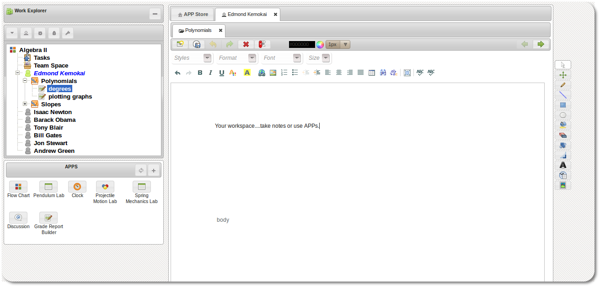

The Workspace
Workspace
The workspace is where (as the name suggests), work is done. Whether it is taking notes, collaborating with team/class mates or writing a paper to be submitted as an assignment.
The workspace is also a platform that exposes an interface to be extended by APP developers. In fact the core of the workspace itself is fairly bare bone in that most of the functionality that makes the workspace interesting and useful is delivered through APPs.
